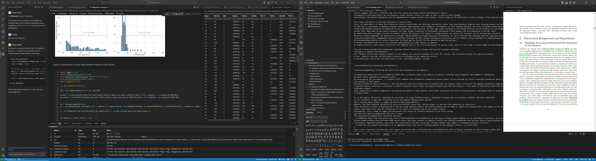

"He who does not research has nothing to teach"
ProverbThis proverb does not only apply to academia, where new findings change the way of thinking and thus topics to teach. Any acquisition of knowledge can contribute to further understand the world we live in. Since many label data as our century's new gold, empirical inference drawn from various data sources may often help in gaining an edge.
Modelling, Analyzing, Visualizing, Presenting and Teaching about Data
Especially econometric and empirical courses during my Master of Economics at University of Münster revealed my preference for drawing inference from all kinds of data. Thanks to my current time as research assistant at the University's Institute for Strategic Management, I am able to use and expand that gathered knowledge.
Gathering Data
As interesting data is often not available in public databases, webscraping is a popular approach to gather data on the internet. In my projects most of the time I use Python for scraping purposes, however I also tried Microsoft's Power Automate as easy surface based tool to scrape data. Furthermore, API's can provide valuable data, which I showed by using the Youtube API in one of my projects.
Analyzing Data
Whether structured or unstructured data, numerical or text-based, or the analysis by "traditional" methods or via "modern" machine learning approaches. There are many ways to analyze data. In my projects I used various methods, such as sentiment analysis, network analysis, VAR-approaches, quantile regression, and many more.
Vizualizing Data
All the work involved in collecting, cleaning and analysing data can be ruined by poor visualisations. That's why clarity and focus take precedence over potentially fancy-looking visualisations. Less is often more. In my projects you will find many traditional visualizations, but also networks, wordclouds and some PowerBI dashboards.
Overview of Projects
Below you can find a list of empirical projects I conducted during my studies as well as my time as a research assistant at University of Münster.

Deriving Supply Chain Risk from Stock Market Correlations
Throughout the 21st century, several incidents have shown how vulnerable our modern supply chains can be. Given these problems, the connectedness of producers and suppliers represents a severe risk exposure for supply chains that should not be underestimated. To assess this network risk, we apply the principles of the Diebold and Yilmaz connectedness approach to the semiconductor supply chain, which may be considered a complementary approach for measuring supply chain risk with publicly available data.

IPO-Prospectus Sentiment Analysis
The IPO prospectus, represents the most important document issued during the process of going public. It can be regarded as a kind of sales promotion towards potential investors and meant to reduce uncertainty and information asymmetries between issuer and investors. Regarding these facts, the words used in an IPO prospectus can provide much information about a company's condition. Does the prospectus use a rather positive or negative language? Are there many words conveying uncertainty or constraints, or do opportunity and strength prevail?
Behavoir of Non-Professional Analysts on Youtube
(NLP of video subtitles)
During the COVID-19 Pandemic capital market engangement increased heavily. Especially younger investors started to retrieve their information for free via Youtube-videos rather than paying for mainstream sources of financial information. But are these Finance Youtubers trustworthy? Do they only follow the hype to maximize views or do they really specialize in their field of expertise and equip their viewer with knowledge?
Measuring Systematic Risk in European Banking
The negative effects of banking crises are well known. Those effects can be far-reaching and restrict the future growth potential of national economies severely. Following the 2008 financial crisis, authorities reconsidered their regulation-strategy, and systemic risk became their focus of attention. In my Master Thesis, I employed a two-stage quantile regression of a bank's co-value at risk after Härdle et al. (2016), to evaluate systemic risk in the European banking system and to verify, whether the EBA's approach identifies the highest risk emitters correctly.
Spotify Dashboard
As a little side project, I created a dashboard to visualizes Spotify user statistics provided by a kaggle dataset.
Monetary Policy's Influence on Commodity Prices
Commodity price movements have two faces: On the supply side, developing countries rely on commodity export income and profit from high commodity prices, while on the demand side, commodity markets transfer shocks from the global economy cycle to single-country inflation. Research found that nominal money supply strongly influences commodity price, which is reestimated by a VAR approach.

Do Gamblers Drive Gold Prices? (Language: German)
Prices of index-listed commodities increased by more than 200% between 2003 and 2008. Simultaneously, the amounts invested in these commodities indexes climbed from $13 billion to $317 billion. Many assumed that there is a causal link, and that commodities index speculators were driving up demand and prices, hindering efficient price formation. Does this hypothesis hold regarding the precious metal gold, which is commonly known for its hedging properties?
My current VS-Code setup

{kind=link}